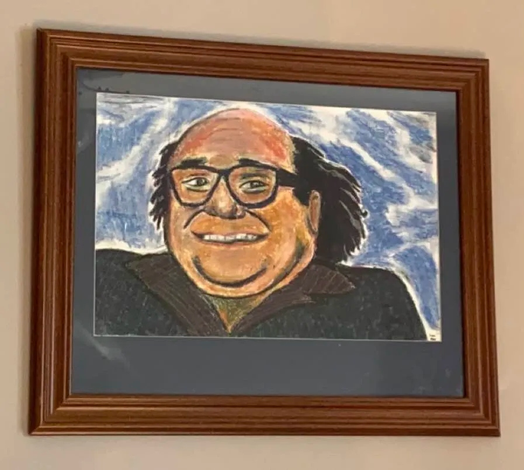

I was born and raised on Cape Breton Island, and moved to Halifax to further my graphic design career. Before I moved here, I studied in the Applied Media and Communication Arts program at the NSCC Marconi Campus and later worked at Fully Promoted, a design and embrodiery shop where I was able to design promotional products and embroider clothes with special machines.
Outside of school/work, I enjoy listening to the music of the 60s and 70s including Jim Croce, Gordon Lightfoot, Franki Valli and The Four Seasons, and Billy Joel. I also enjoy listening to comedians like Norm Macdonald, Gilbert Gottfried, Conan O'Brien, and Rodney Dangerfield. I grew up on home style meals and love cooking them for myself—the results vary. At the house I'm living in now, I also have two cats, but back home in Cape Breton I have two cats and two budgies and a dog.
...and that's a little bit about me.